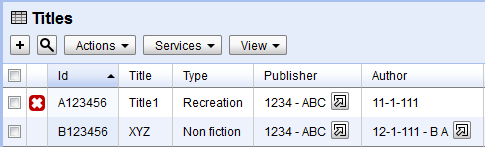
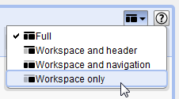
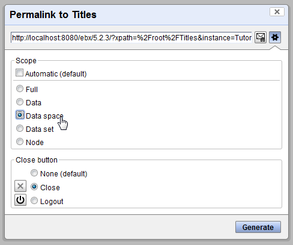
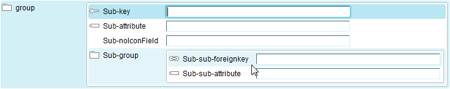
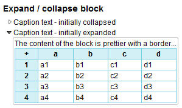
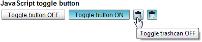

Release Date: September 17, 2012
In this version, Orchestra Networks introduces EBX5 Add-ons, a set of modules that provide new capabilities, including pre-defined data models, new end-user features and integration services.
The EBX5 Add-on for Microsoft® Excel is compatible with this version of EBX5.
See Installing EBX5 add-ons for information on configuring add-on modules.
A confirmation message can now be specified for module services, as was previously possible for schema services.
See UI services for more information.
In addition to being able to validate the entire data set from the Actions menu in the navigation pane, it is now possible to validate a specific table from the Actions menu in the workspace of that table.
In tabular views, when records have validation messages, a new column is displayed showing a severity icon for each record. If a record has several messages of different severities, the icon of the highest severity is displayed.

Additionally, a new filter is available for users to see records according to their severity.
See Validation messages filter for more information.
A '+' button for creating records has been added next to foreign key fields. This button allows users to create a new record in the target table using a pop-up without navigating away from the current form. When the record creation has been completed, the newly created record is automatically selected. Only users with the rights required to create new records see this button in their interface.
A button has been added for the selection of screen layout modes. Using this button, it is now possible to hide the header, the navigation pane, or both.

The permalink pane now offers two new customizable options: close button and scope. These set how the user interface will be displayed when the permalink is used. These options can be set by clicking the parameters button.

See Layout specification for more information on the scope and close button parameters.
A custom view can now be published with a unique publication name.
The publication name of a custom view can be passed to a web component using the new viewPublication HTTP parameter for the web component to apply the custom view.
See setViewPublication in the Java API for more information.
The new data services parameter 'viewPublication' has been added to allow users to apply a previously published custom tabular view by specifying its name. This is a more user-friendly reference that serves the same function as the parameter 'viewId' in previous versions. Accordingly, the parameter 'viewId' is now deprecated, and while it remains supported for backwards compatibility, it will be removed in a future version of EBX5.
See viewPublication in the Data services documentation for more information.
The workflow engine now handles script execution in different ongoing data workflows better than in previous versions by using internal thread pools.
It is now possible to declare additional output parameters for an extension of a built-in service. This feature improves the declarativity of a UI service that extends a built-in service.
This is useful for manually feeding a specific data context variable into a built-in service. To do this, you must extend the built-in service in module.xml and add the new output property. Then, in the user task definition, select the data context variable for this output property. Finally, manually update the interaction parameters in your code by using setInternalParameters, for example in a trigger or in a service. The data context will be mapped automatically.
See Integration of UI services with workflows or perspectives in the UI services documentation and InteractionHelper in the Java API for more information.
The menu item 'Message templates' for accessing the configuration page for data workflow email notifications has been moved to the Workflow Models > Actions menu in the Workflow Models area.
See User task notification for more information.
The built-in condition for validating data has been enhanced to include a parameter to specify the level at which to perform the validation. In addition to being able to validate data at the data space level, as was previously possible, you can now specifically validate a data set, table, or record.
See Workflow model conditions for more information.
A new parameter has been added to the 'Access data' service in user tasks to allow direct access to a published view on a table.
See Access data built-in service for more information.
The parameter 'scope' for services, which was first introduced in EBX5 version 5.2.2, has been included for all built-in services in user tasks. This parameter facilitates enlarging the area which users are able to navigate within the user interface when working with data in a user task. That is, the area that the user can navigate can now include the current data set, the current data space, the 'Data' area, or the complete user interface.
See Built-in Services and Layout specification for more information.
By default, when the built-in 'Access data' service is started, the Accept button is immediately available. It is now possible to disable this behavior by setting the new parameter 'disable Accept at start' to true. When this parameter is set, the completion of the associated interaction must be performed programmatically, for example, using a trigger or from a UI service. This feature is useful when a particular action is expected from the user in order to consider the work item as completed.
See Built-in Services and InteractionHelper for more information.
When several work items are created programmatically, it is now possible to define a specific label for each work item.
See CreationWorkItemSpec for more information.
It is now possible to retrieve information on a data workflow in progress using the API, such as its publication, or a list of associated work items that currently exist.
See the following Java API documentation for more information:
PublishProcess (workflow model publication),
ProcessInstance (data workflow),
UserTask.WorkItem (work item).
In relational mode, it is now possible to validate a foreign key constraint when data has been written directly to the database using SQL, which bypasses the governance framework of EBX5.
See Relational mode for more information.
It is now possible to purge the history of a data space, both through the user interface and the Java API. Through the user interface, it is also possible to purge the history of deleted data spaces.
See markHomeForHistoryPurge in the Java API for more information.
A new feature for purging the database resources of mapped (historized or relational) tables has been added. Once historization or relational mode is deactivated in the data model, it is possible, through the user interface, to purge the corresponding data mapping objects in the database.
This allows recreating a model from scratch in order to workaround the current limitations when modifying data models.
See Purging database resources of mapped tables for more information.
The purge user interface has been updated to improve ease of use. All items related to purge are now found in the main Actions menu in the navigation pane of the 'Administration' area, under a section called 'Clean up tools'. Previously, these actions were found in the Actions menu under the 'Data Spaces' section of the 'Administration' area.
The purge process is now separated into two distinct actions: marking items for purge and executing all requested purges.
See Purging data and history and Purging database resources of mapped tables for more information.
A UIBeanEditor can now implement the method addForNullInTable to customize the way the null value is displayed in the table view.
See UIBeanEditor.addForNullInTable() in the Java API for more information.
You can now add an asterisk to a label to denote a mandatory field by calling the method setMandatoryIndicator in the class UIFormLabelSpec.
See UIFormLabelSpec.setMandatoryIndicator() in the Java API for more information.
When using UI component classes, it is now possible to add a customized icon next to the label of a form row using the UIComponentWriter API.

See the following startFormRow methods that use this new functionality in the Java API for more information:
For UI beans, the following new methods with the parameter enableIcon have been added to UIResponseContext in order to allow enabling or disabling the built-in data model type icon of a form row:
addFormRowBestMatchingComponent(Path nodePath, boolean enableIcon)
addFormRowBestMatchingEditor(Path nodePath, boolean enableIcon)
addFormRowBestMatchingDisplay(Path nodePath, boolean enableIcon)
The corresponding existing methods call these new methods by passing 'false' for enableIcon.
For UI services that used the old methods without the parameter enableIcon, see the Backward compatibility section for information on recompiling client code due to these changes.
It is now possible to create a labelled expandable section in a form. Two new methods, startExpandCollapseBlock and endExpandCollapseBlock(), have been added to the class UIComponentWriter to facilitate this capability. Use the respective methods to mark the start and end of a section of HTML to make allow it to be expanded and collapsed.

See startExpandCollapseBlock and endExpandCollapseBlock() in the Java API for more information.
The class UIButtonSpecJSActionToggle has been added to the Java API for creating toggle buttons that perform the JavaScript commands 'ON' and 'OFF'.

To add a toggle button, use the addButtonJavaScriptToggle method in UIComponentWriter.
See UIButtonSpecJSActionToggle and addButtonJavaScriptToggle in the Java API for more information.
A sub-session web component can now be created from a UIAjaxContext.
See UIHttpManagerComponent.createOnAjaxContext for more information.
New API has been added for decomposing a foreign key value into the component primary key values in the referenced table.
See SchemaNode.getTablePrimaryKeyValues and SchemaFacetTableRef.getTablePrimaryKeyValues in the Java API for more information.
The getLinkedRecord(s) methods have been added to the SchemaFacetTableRef interface. They allow fetching the record, or for aggregated lists, list of records, linked to a tableRef node.
See getLinkedRecord for more information.
The getLinkedRecord method has been added to the SchemaInheritanceProperties interface. It allows retrieving the record linked to an inherited field node.
See getLinkedRecord for more information.
The setDatabaseHistoryActivation method has been added to the ProcedureContext interface. It allows temporarily deactivating historization within the scope of a procedure.
See setDatabaseHistoryActivation and isDatabaseHistoryActivation for more information.
Due to a correction for the bug 5259, the results of 'select' operations using a custom view through a data service may differ from previous versions. Namely, the filter and sort order have been fixed.
Some methods in the class UIResponseContext have been moved to UIComponentWriter. This causes an incompatibility with existing UI services client code using these classes if they were compiled with a previous versions of EBX5. Thus, in order to avoid the Java error IncompatibleClassChangeError, client code must be rebuilt against this version of the ebx.jar library and redeployed with these binaries
Upgrades to this version are definitive. Repositories used with this version are not compatible with previous versions of EBX5, due to the addition of a technical data set for EBX5 add-ons.
In order to upgrade your version of EBX5, perform the following steps:
Backup your repository, including the RDBMS and the directory ebx.repository.directory.
Replace the *.war and ebx.jar files on your application server.
[2323] Inherited fields lookup mechanism does not check infinite cycles in which no field is set.
If the inheritance relationship defines a cycle in which no field is set, then an internal StackOverflowError is thrown and the end-user does not receive an explanation.
[4936] Text search on transactions table in global history view is not possible on some fields.
In the global history view, an exception is thrown when performing a text search on some fields because they are not mapped to database fields.
[4953] The history of a previously purged data space is included in the history of a new data space with the same name.
If a data space containing a historized table is closed and purged, and a new data space is created with the same name and data set containing the historized table, the same history table in the database is reused. Thus, the history of the original data space is included in the history of the new data space. The history of the new table should not be associated with the history of the new table.
[4958] An exception occurs when trying to close a data space or snapshot.
If a data space or snapshot is present in the database, but its record has disappeared from the table of branches and versions, an exception occurs when trying to close it.
[5010] Summary of modifications in the global history view is incorrect.
When a commit threshold is involved, modifications performed are recorded multiple times in the same transaction record of the global history table.
[5265] A predicate specifying multiple records is not optimized in some cases.
For a table whose primary key fields are pk1 and pk2, multiple records can be specified by an XPath in the form [(pk1=... AND pk2=...) OR (pk1=... AND pk2...) OR ...]. An internal optimization is not ensured in some cases, such as for the data services select operation using xpath. Performance of such non-optimized requests can be very poor, especially for large tables.
[5269] Optimize the purge of orphan blocks.
Extra optimization has been carried out for the case of large or long-lived repositories.
[5292] The method SchemaNode.getInheritanceProperties().getInheritedNode() returns 'null'.
The method SchemaNode.getInheritanceProperties().getInheritedNode() always returns 'null' when it is called from the method ValueFunction.setUp, even if the SchemaNode is an inherited field.
[5311] The method RequestResult.nextAdaptation() may raise an error in case of a concurrent deletion.
In semantic mode, when a RequestResult is iterated with the method nextAdaptation(), it may raise an IncompatibleChangeError if a record is concurrently deleted.
This behavior can lead to a fatal error during the workflow execution.
[5502] Executing a purge removes data from tables in relational mode.
When a purge is executed, data is removed from tables in relational mode, regardless of which data space they are in.
[5573] Decimals smaller than one millionth do not conform to the XML Schema standard.
Fields of 'xs:decimal' type whose value is between -0.0000001 and 0.0000001 are exported using exponential notation. This is not allowed by the XML Schema specification.
[5150] Error on mappings with a JavaBean and an XML Schema element having an name starting with an upper case character.
A schema compilation error occurs when an XML Schema complex type, with elements having an name starting with an upper case character, is mapped to a specific Java class. This occurs only and only if the name starts with one capitalized character. In this case it is said that the corresponding Java class does not define a corresponding property.
[5216] No error message displayed when duplicating a field, table, or group with a name that already exists.
When duplicating a field, table, or group in a data model with a name that already exists, the user does not receive any error messages.
[5217] Length constraints on fields in historized tables are not checked by data model validation.
Fields of a historized table must define length constraints in the data model. These constraints are not checked upon data model validation, only at publication-time. This results in missed errors in the data model validation report.
[5253] It is not possible to specify a data transformation on complex node in the DMA.
The property for encrypting data when exporting an archive is not available on complex terminal nodes.
[5321] Deleting an element causes user-specified element sort order to be lost.
If an element is deleted, the order of remaining elements reverts to being sorted by creation time.
[5322] Rules do not accept literal values.
A simple value function does not accept string literals as ifTrue() and ifFalse() values.
[5344] An error occurs when an excluded value of a foreign key is an empty string.
An error occurs when the user adds an excluded value in the 'Advanced controls' of a foreign key without entering a value, then tries to publish the data model.
[5375] Cannot access a validation rule created by "Add a bloc" without adding a criterion.
When a validation rule is created without a criterion using Add a bloc to configure a rule, nothing is displayed when the rule is clicked.
[5417] Cannot import a data model from a module if the module containing the last imported data model no longer exists.
An error occurs when trying to import a data model from a module if the module containing the last imported data model does not exist anymore.
[5480] Informative raw XPath predicate is not refreshed when a rule is modified.
In the rules editor, the informative XPath predicate is not refreshed when the rule is modified.
[5523] It is not possible to specify an implementation class in the DMA.
Java classes are not available when a user wants to specify an implementation class for a group in the DMA.
[4937] Comparisons in resolved mode can be incomplete for entities that are not persistently modified.
The comparisons in resolved mode can omit entities (data sets, tables, or records) that have not been modified persistently. Nevertheless, the resolved views are different due to changes from inheritance or computed values. Such comparisons can be performed using the getChanges data service operation or the DifferenceHelper Java API.
[5259] Custom tabular view filters and sort criteria are not applied.
When users define custom tabular views on tables, any defined filters or sort criteria are not applied when the view is used by a data service.
[5262] Fatal error occurs when using a custom hierarchical view.
When a user configures a custom hierarchical view and applies it using the parameter 'viewId' from a data service, a NullPointerException occurs. This operation should raise an error, as use of 'viewId' with a hierarchical view is not supported for data services.
[5351] Non-string empty elements in update operations raise errors.
An empty element for a non-string node in an update operation raises the error "Empty element are not supported for type xxx", even if the updateByDelta option is set to 'true'.
[5181] Menu item 'History for all data spaces' causes an error.
Selecting the menu item 'History for all data spaces' results in an error if the data set is present in numerous data spaces. Similarly, clicking the menu item 'History for current data space and ancestors' fails if the target data space has numerous ancestors.
[5313] Some 5.2.1 data models with historized tables do not compile with 5.2.2.
If a table contains an aggregated list under an aggregated list or under a terminal complex, it can be historized with version 5.2.1, but not with version 5.2.2.
[5390] A primary key in a complex is not supported by history.
If the primary key of a table is under a group, history cannot be enabled for the table. The primary key may not be found, as it is searched from 'root', not the group.
[5091] When there are more than 100 information level messages, all messages are displayed on one page.
The same strategy as for error or validation messages should be applied. That is, display a maximum of 100 messages per page.
[5138] An error occurs while merging a data space.
While merging a data space, an exception can occur when a data space or snapshot that contains a foreign key referencing a table in the merged data space is created.
[5208] Structural constraints are not checked when importing an archive into mapped tables.
On mapped tables structural constraints are blocking regarding to the validation process. These constraints are not checked when importing an archive into a data space containing mapped table.
[5247] Cannot open a record if the primary key contains special characters.
When a primary key has special characters, the user cannot edit the associated record if the application server does not use UTF-8 encoding for HTTP requests from EBX5.
[5252] Some optimizations on data validation cause the duplication of error messages when a table is validated several times.
Optimizations on validation frameworks have been performed in order to reduce the validation time required by some constraints in a table. In some cases, error messages can be duplicated if a table is validated several times.
[5336] Nested lists do not handle occurrences of sub-lists properly.
If a list nests multiple sub-lists at the same level, references to the occurrences of subsequent sub-lists are confused with the occurrences of the first sub-list. For example, the trash can button for all sub-list occurrences act upon the occurrence at the same index of the first sub-list.
[5177] A ClassCastExeption might occur while using the search tool.
If a table contains a list reference field, a ClassCastExeption occurs while using the search tool.
[5187] Cannot create records for a table that has a password field as its primary key.
After publishing the data model of a table that has a password field as its primary key, the user cannot create records for the table in data set.
[5201] Predicate editor choice elements are not updated after a schema modification.
A null pointer exception occurs on predicate editor after a schema modification.
[5222] A 'previous page' action on a hierarchy page displays the start page.
If the target table of a hierarchy has a composite primary key, performing a 'previous page' action on a hierarchy page displays the start page.
[5248] A ClassCastException might occur while using the search tool.
If the field searched on is a nomenclature field 'with message', a ClassCastException occurs while using the search tool.
[5316] Extraneous dots. are added in user last names and first names.
When creating a new user with a dot "." in the first or last name, an extra dot is appended to the end of that value.
[5407] The search tool does not work properly on fields with accents in their labels.
The search tool does not work properly on table reference fields whose labels contain accents.
[5439] The radio button and text field on the import/export screens do not work properly.
On the import and export screens, when the user clicks or types characters in the text field, the corresponding radio button is not automatically checked for that option. Similarly, when the user clicks on a radio button, the associated text field does not automatically get focus.
[5564] Hierarchy ordering is only possible on leaf nodes.
This issue affects a dimension with two successive dependency levels, when the intermediate level, that is, not the target level, is configured for ordering. In this case, the ordering buttons are not displayed.
[4940] It should not be possible to replay a step while a script is executing.
When a script or condition is executing in a data workflow, that is, the token is in the "executing" state, it should not be possible to replay the step. As it is not possible to stop a launched process, the replay step does not make sense for a script or condition.
[4977] Comments for a work item are not displayed if the work item has not been reached.
In the graphical workflow, the comments for a work item should be displayed even if the work item has not been reached.
[5126] The 'Accept' button is displayed for an unimplemented work item.
In a data workflow, the 'Accept' button is displayed before the work item has been implemented.
[5184] Navigation in Workflow Modeling needs to be improved.
In the Workflow Modeling area, when you select the action 'Create a snapshot' and immediately select another action ('Duplicate' or 'History') without first cancelling the snapshot creation, a navigation error occurs. When performing an action at workflow models level, the current work item and its associated actions need to be hidden.
[5244] An error occurs when building a workflow notification message.
A ClassCastExeption exception occurs if a specific URL for login page is defined in the interface configuration.
[5317] The system does not update workflow model validation completely after modifications.
After correcting errors in a user task definition in a workflow model, the validation upon submit does not update for all modifications.
[5327] View mode selected in Data Workflows not reapplied properly.
When switching to another area and back, the view mode selected in the Data Workflows area is not reapplied properly.
[5397] Accepting a task in the workflow raises a selection error.
If a user works on and accepts a task in a data workflow that is not on the first page of data workflows, the user is not redirected to the correct page and an error message is displayed.
[5401] Work item link and button are missing in "My work list".
The work item link and button are not accessible in "My work list" when the work item hierarchy pagination hides it.
[5428] Concurrent accesses on a work item may cause an undocumented error.
In case of multiple concurrent accesses to the user interface, an empty workspace may be displayed with the error message: "An error occurred while editing this hierarchy node. Please contact your administrator."
[5442] Some values inputted as built-in parameters are not copied into the interaction.
Some built-in parameters are omitted in the input parameters of the interaction. For example, the tracking info and the scope are not copied. The built-in parameters should be automatically copied to be available in other contexts.
[5477] It should not be possible to make a publication with an empty name available.
When a publication is made unavailable, the publication name is cleared. In the Administration area, it is possible to change the state of the publication to make it available again without redefining a publication name. If the user publishes the associated model, an error occurs.
Moreover, the available publication without a publication name must be not displayed in the work list and in the publication service.
[5299] An error occurs when accessing a D3 data space.
When accessing attempting to access the list of snapshots of a D3 data space through the UI, an exception occurs.
[5487] Cannot perform comparisons with D3 versions in slave instances.
The comparison user interface does not propose D3 delivery data spaces for comparison.
[5186] Documentation for reminders in workflow models needs to be improved.
Documentation on reminders in workflow models is not clear enough. More details are needed on which notification emails are sent periodically.
[5507] Multi-table views should be noted as a beta feature in the documentation.
Multi-table views are a beta feature and must be indicated as such in the product documentation under Data Sets > Advanced viewing modes.
[4746] A fatal error occurs while importing a CSV with a wrong encoding.
If the encoding of a CSV file to import is wrong, a fatal error occurs. The user should be notified that the import failed instead of encountering a fatal error.
[4766] An error occurs while importing an XML file with an empty string for a foreign key node.
When importing an XML file, if the XML file contains an empty string for a foreign key field, the following error occurs: "Incorrect primary key format: void field is not accepted since it is converted to null value."
[5229] Importing an XML file in replace mode does not work.
When a user imports an XML file in replace mode, it aborts with an error.
[5339] An error occurs for CSV exports that include both XPath header and technical data.
If both the 'XPath header' and 'include technical data' options are selected, the CSV export process fails with a NullPointerException.
[5361] Export all the table when using export CSV/Excel services that available in detail of a record.
Go to see detail a record of a table, there available Export CSV/Excel services to export data of the record. But system export all the table
[5574] Export downloads may fail if using SSL and Internet Explorer 8.
The export download fails if EBX5 is configured to generate a local URL and the user session is using HTTPS protocol on Internet Explorer 8.
[5551] Built-in data type labels cannot be localized once a data model has been created.
Built-in data type labels are stored in the 'Data types' table and cannot be modified later, nor can new localizations be added.
[4948] Temporary files are not removed.
When users perform exports of CSV or XML files, the temporary files are not automatically removed after the operation completes. Those files are located in the temporary directory of EBX5 (ebx.temp.directory, or java.io.tmpdir by default).
[5275] On WebLogic, JNDI resources for email do not work.
Since JNDI resources on WebLogic are not under a java:comp/env context, the email resources cannot be located.
[5276] An error occurs while using BatchLauncher.
A ModuleDefinitionException occurs when using BatchLauncher if there are beans defined in the module.xml file.
[5516] An error occurs while working on a data workflow page.
A FrontEndException occurs when the user clicks a list of data workflows. The current user switches to the system user, and the workspace displays a login screen.
[4684] There is no way to launch attribute-level UI services.
Attribute-level UI services are not proposed anywhere in the UI.
[4688] The locale of the documentation is incorrect.
When accessing the EBX5 documentation through the user interface, the locale does not correspond to the locale of the manager.
[4872] On the 'URL Policy' configuration page, there is no way to differentiate an undefined value from an empty string.
Once a value has been configured on the user interface 'URL Policy' page in the Administration area, it is impossible to reset the field to an undefined value.
[4997] Cancelling an archive import does not unlock the data space.
A data space remains locked after cancelling an archive import.
[5005] In Data Workflow, refreshing loses the current data workflow selection.
In the Data Workflow area, clicking the 'Refresh' button resets the navigation panel selection. Users have to reselect the process they are working on.
[5023] If a data space is locked, no user can modify that data space's information or permissions.
When a data space is locked, even the user who locked the data space does not have the 'Information' and 'Permission' entries in the 'Actions' menu. At the least, the user who locked the data space should have access to these entries.
[5071] In a data set inheritance tree, a data set should not be visible if the user does not have appropriate permissions.
In the data set tree, every data set is always displayed, regardless of the permissions defined on the data set.
[5085] The 'Back' button when generating a data set comparison WSDL does not work.
The 'Back' button on the screen to download a data set comparison WSDL leads to an unrelated page.
[5095] The ebx-manager module and its schemas should not be available for use.
The ebx-manager module and its schemas are currently accessible for the creation of data sets and as a destination for importing archives using the DMA. This should not be possible.
[5117] No confirmation dialog is displayed when detaching a node.
A confirmation dialog should be shown when a user detaches a node in a Data Hierarchy.
[5156] The icon of the preview button created by UIComponentWriter.buildButtonPreview is not modifiable.
If the user wants to use the preview button to perform a creation or deletion, there is no method of setting the 'Add' or 'Delete' icon to the button. It would also be helpful to add the 'Preview' button icon to the public collection (UIButtonIcon).
[5173] After modifying values in the "Colors and decorations" table, EBX5 is no longer accessible.
The EBX5 user interface is no longer accessible when a non-hexidecimal value is entered in the "Colors and decorations" table in the Administration area.
[5182] Unrelated workflow models are shown in the navigation panel.
When working with a particular workflow model in the workspace, the navigation pane still shows other workflow models.
[5185] A user unfriendly error message is displayed when users enter an invalid scope for the validation service.
In the URL of a web component, it is preferable not to produce an error if the scope is invalid.
[5367] Child branches are displayed by creation date in the navigation pane.
Child branches should be displayed by label in the navigation pane.
[5412] A UIService with a permission set to 'disabled' is available at the node level.
If a UIService defines a ServicePermission and that service permission returns ActionPermission.getDisabled(), the service becomes available at node level.
[5421] If a user is not defined in default directory, the login page remains displayed.
If a user is not defined in the default directory, the repository login page is always displayed in the workspace.
Other parts of the user interface, such as the navigation pane and header, work properly. This issue only happens when extending DirectoryDefault.
[5458] Cannot navigate to system information when importing an archive on a technical data set.
When trying to import an archive on a technical data set, it is impossible to navigate to system information using the menu. The system displays an "invalid request" error.
[5494] The 'Move' action is always visible in the 'Actions' menu regardless of permissions.
The 'Move' action should not appear in the 'Actions' menu of a hierarchy view if the user does not have the permissions to move any of the nodes.
[5503] Javascript error on CSV export screen.
A javascript error is raised at the export CSV configuration screen display.
[5504] When there is a validation error on an element of a list, the index of the element is incorrect.
If there are validation error messages in the form view, the index of the erroneous elements use the Java index instead of the index of the elements in the user interface.
[5535] Negative timeout values for unlimited sessions does not work.
When an administrator enters a timeout value of '-1' in the 'Session Manager', a subsequent connection aborts the user's session, giving a timeout expiration as the reason.
[5541] Combining a UIBean and a facet enumeration on inherited attributes does not work.
Combining a UIBean and a facet enumeration on inherited attributes gives the error a "UIListSearch component not found in page" error.
[5257] Behavior determined by 'Display feature' in the global permissions is too restrictive.
If the Data Space area tab is hidden for a given profile by setting 'Display feature' to 'No' in the Administration > Global permissions, this profile is no longer allowed to create or close data spaces.
[5405] It is not possible to change the owner of a data space that belongs to a non-super-owner user.
If a data space belongs to a user who does not have the right to change its permissions but has the right to change its owner, all information in its information pane is displayed as read-only.